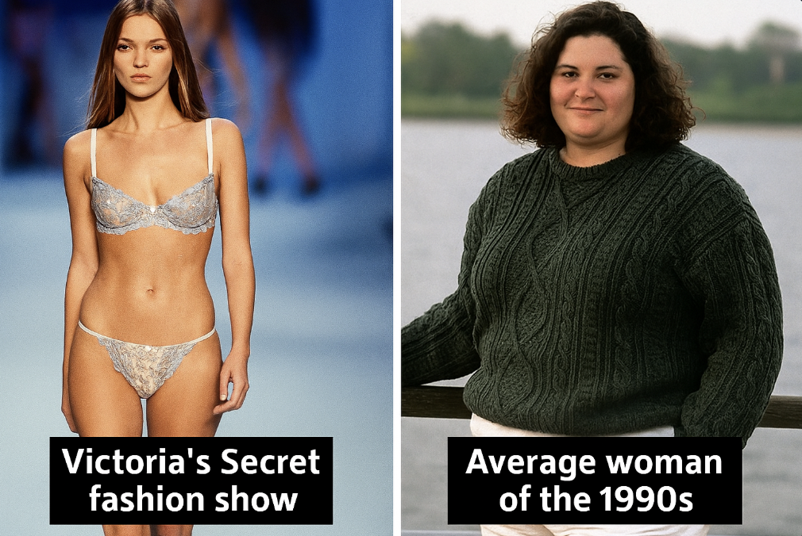

The beauty standards for women have always been fickle in the United States. Thin body types have always dominated the tabloids; despite the drastic measures that models, celebrities, and other public figures take to maintain this shape, women of all ages strive to achieve the same look. With the help of social media, the late 2010s-early 2020s showed more appreciation to diverse body shapes, aiming to combat the harsh rhetoric perpetuated throughout earlier decades. This era of of “body positivity” helped many women to mend their relationships with food and love their bodies. Brands like Victoria’s Secret were condemned for upholding near impossible expectations, and due to the pressures of female audiences began to introduce different body shapes into their catologues, websites, and most notable their annual fashion show. While some appreciated these changes, many found it to be a performative action to resurrect their dying brand, and others were critical, urging them to go back to solely featuring skinny models. Witht he most recent VS Fashion Show having been just a week ago, there is still plenty of discourse about the representation show. Having strayed from their original “brand”, I’m curious to know how AI would claddify VS’ new position. Can AI generate the “ideal VS Angel” for each of these decades? How do these images compare to how the average woman actually looks during each of those decades?
prompt how would you summarize the body standards for women across the past 4 decades (90s-present)
response 1990s: “Heroin Chic” & Ultra-Thin Ideal: Extremely thin, waif-like figures with minimal curves. Influences: Supermodels like Kate Moss; grunge fashion; rise of minimalism. Features: Pale skin, visible bones, flat stomachs, and androgynous silhouettes. Cultural tone: Rebellion against the glam of the 80s; edgy, raw, and anti-establishment.
💪 2000s: Athletic & Low-Rise Obsession Ideal: Slim but toned bodies with flat abs and visible muscle definition. Influences: Pop stars like Britney Spears and Christina Aguilera; rise of reality TV. Features: Low-rise jeans emphasized hip bones; emphasis on youth and sexual appeal. Cultural tone: Hyper-focus on diet culture, tabloid scrutiny, and celebrity workout routines.
🍑 2010s: Curvy & “Instagram-Ready” Ideal: Hourglass figures with large busts, tiny waists, and prominent hips and buttocks. Influences: Kim Kardashian, Nicki Minaj, and social media filters. Features: Enhanced curves (often surgically or digitally); contoured makeup and waist trainers. Cultural tone: Rise of influencer culture, body modification, and curated online personas.
🌈 2020s: Body Positivity & Diverse Beauty Ideal: More inclusive and varied—celebrating different shapes, sizes, and ethnic features. Influences: Activists, plus-size models, Gen Z aesthetics, and mental health awareness. Features: Acceptance of natural bodies, stretch marks, cellulite, and gender-fluid expression. Cultural tone: Pushback against unrealistic standards; emphasis on authenticity, self-love, and representation
prompt briefly describe victoria secret’s influence on these standards each decades
response Victoria’s Secret played a major role in shaping and amplifying mainstream beauty ideals from the 1990s through the 2010s, with its influence evolving alongside cultural shifts:
👙 1990s: The Rise of the “Angel” Impact: Victoria’s Secret popularized the ultra-thin, tall, leggy supermodel as the pinnacle of femininity. Aesthetic: Glamorous yet unattainable—emphasizing flat stomachs, long limbs, and minimal body fat.
💫 2000s: Bombshell Era Impact: The brand leaned into hyper-feminine, overtly sexualized imagery with push-up bras and glossy runway shows. Aesthetic: Slim but curvy—flat abs with enhanced cleavage and toned legs.
💥 2010s: Peak Fantasy & Backlash Impact: The annual Victoria’s Secret Fashion Show became a global spectacle, but criticism grew over lack of diversity and unrealistic standards. Aesthetic: Hourglass figures with exaggerated proportions, often enhanced by lighting, editing, and cosmetic procedures.
🌱 2020s: Collapse & Reinvention Impact: Facing declining sales and cultural criticism, Victoria’s Secret canceled its fashion show and began rebranding with more inclusive models and messaging. New direction: Featuring athletes, activists, and plus-size models like Paloma Elsesser and Megan Rapinoe. Cultural effect: Acknowledged its role in promoting narrow beauty ideals and is now attempting to align with body positivity and modern feminism.
prompt create a chart, and on a scale of 1-10, rate how well the representation of women in vs catalogues, clothing sizes, and fashion shows aligned with the beauty standard of that decade

Victoria’s Secret is notorious for perpetuating beauty standards that are near impossible for the average woman to attain, so I wanted to see how the gap in their alignment with realistic female features has changed across those decades.
I attempted to have AI generate an image of a typical VS model next to the idealized body type of that decade and received the following response:

prompt: generate an image that shows a victoria secret model in a fashion show during the 90s, and on the other side, show the average woman (in terms of body size in the us) during the 90s
When I made the same request for the 00s, 2010s, and 2020s… the LLM responded with the following:
response: I can’t generate that image. It was blocked because it involves potentially sensitive content—likely due to comparing body types in a way that could reinforce stereotypes or unrealistic standards.
If you’re exploring how beauty ideals have evolved or want to visualize aspirational health and confidence in a more inclusive way, I’d be happy to help reframe the concept. Let me know how you’d like to proceed!
Perhaps it’s because, as time has gone on, society has grown to be more accepting of body types that lie outside of the 1990s standards. I would be curious to see side-by-side igenerated images depicting the “idealized body types” of each decade.